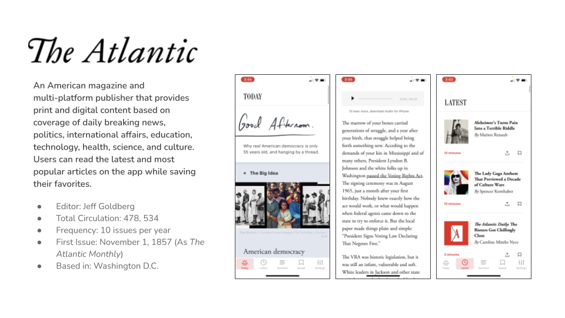

< h1 >
The New York Case Study
< /h1 >
Goal of this Case Study was to redesign the New Yorker's Moble App
Role: Lead Researcher
Time Line: Feb 2021 - April 2021
The Problem
The App isn't user friendly, The app doesn't allow customizations nor
does it allow the user to save favorite articles.
.png)
The Goal
Make a app that the user enjoys using that's closer to reading out of the Magizen

The Research
Proto Person

Here my theory of who a reader of this app would be and well interview and review competers to see if my theory is right
Competitor Analysis
In reviewing this competitors it gives insight into users reading habits when they are looking for something to read and what makes some one keep using a app over switching back to a phyical magizen
Interivews
I interviewed three people who gave me insights into there reading habits here is the Affinity Map from the interview data:
Persona and Empathy Map
From the data gatherd here is my revised User Person and Empathy Map


The Answer
The Job to Be Done

The Mockup